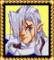

|
경비병2
여기가 파오카라밴이다. 파오사람들은 이안에서 파오평원사이를 돌아다니지. |
|
경비병3
엘리엇장군은 자신만큼이나 혹은 자신을 뛰어넘는 사람에게 자신을 대신해 미래를 맡기려고 그 사람을 찾고있다. |
|
할아버지2
엘리엇장군을 무찌를 가능성이 있긴하다. 허나 우란바톨은 또 다르다. 그 요새는 난공불락이야. |
|  |
어니스트
나는 기사 어니스트라고 합니다. 내 가족들은 모두 발바자크에게 살해당했습니다. 병사들을 데리고 함께 우란바톨로 갈것입니다. 그리하여 복수를 할것입니다. 그것이 바로 내 꿈입니다... |
|
술집주인
너와 대화하던 그 사람...엘리엇장군이었어! |
|
마을여자
무기/도구상점은 카라밴과 함께 움직인다고 - 살수있을때 사라고! |
|
기차운전수
구경만 하라고! 아무것도 만지지마! 기차가 저절로 움직일지도 모른다! |
|
무기상인
여행에서 얻어온 무기들을 쌓아놓고 팔고있습니다. |
|
젊은남자
파오돼지들은 미래를 예측하는 기이한 능력을 지니고있다. 코론여왕님께서는 파오돼지들이 생각하는것을 투시하신후 우리나라의 미래를 대비하신다. |
|
경비병4
우리는 파오평원 방방곡곡을 다닌다. 출발하는게 늦어지는군! |
|
기차 컨트롤
기계동작에 대한 사항이 적혀있다 :
기차 조종:
관리자외 작동금지
조종석에 카드가 놓여져있다.
요구르트 카드를 얻었다. |